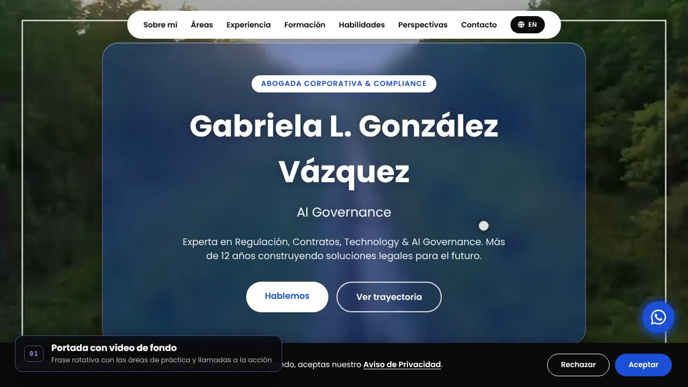
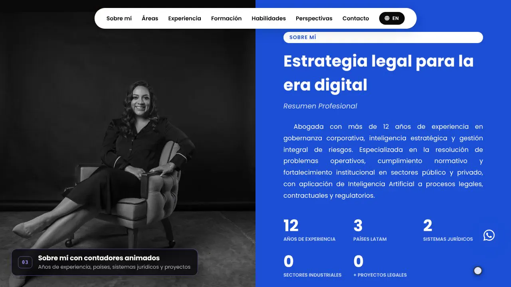
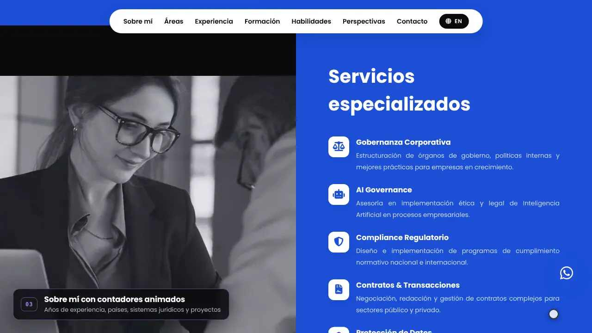
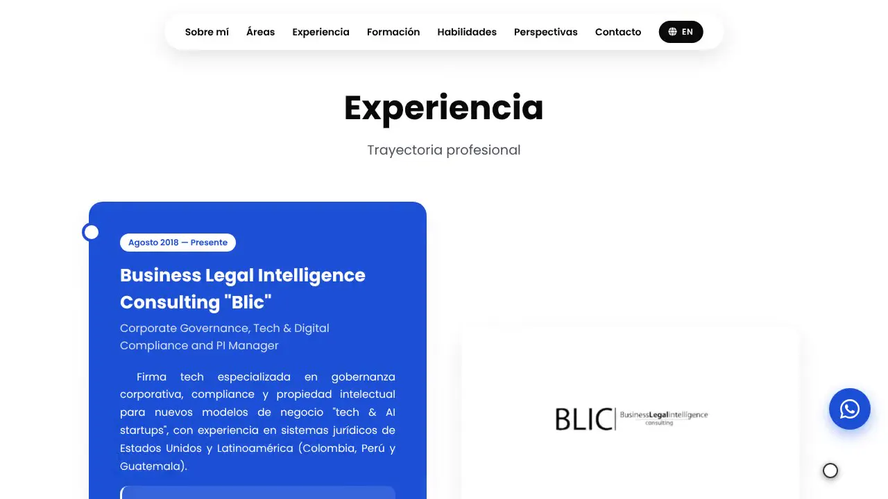
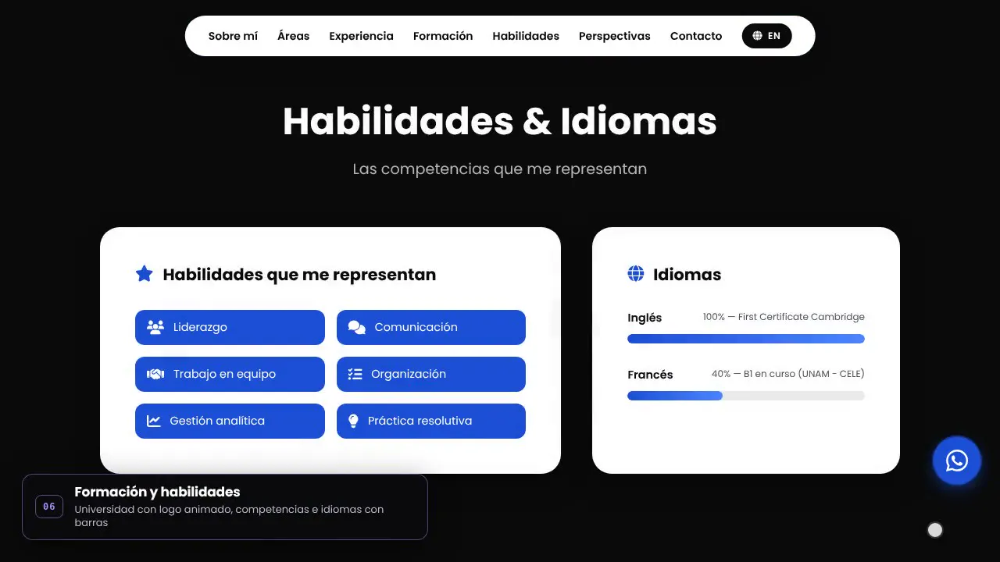
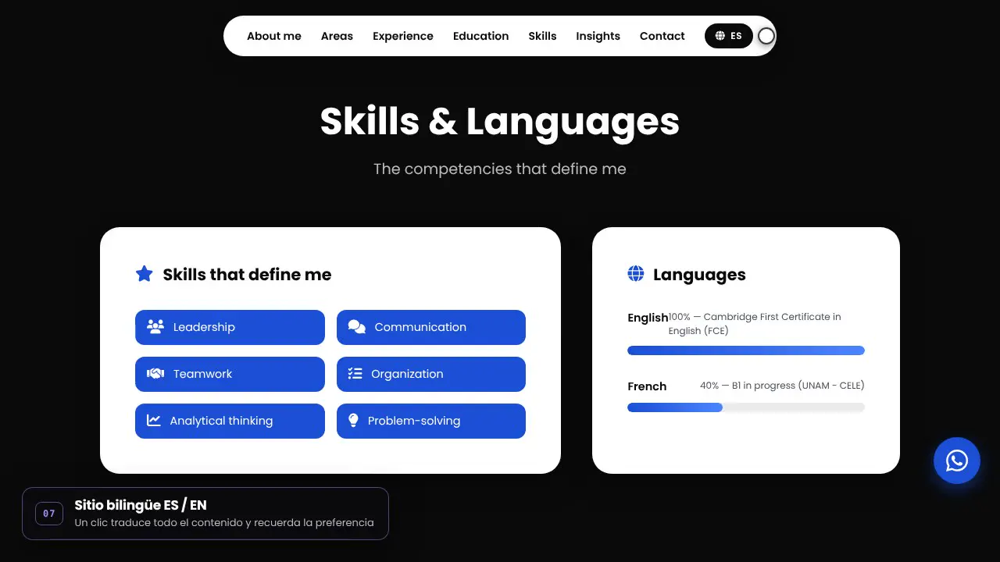
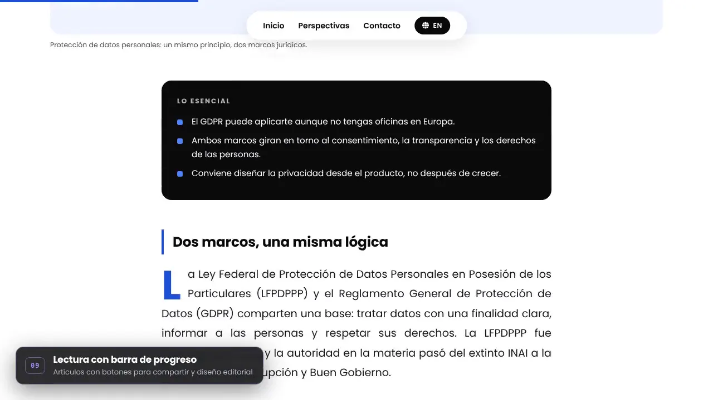
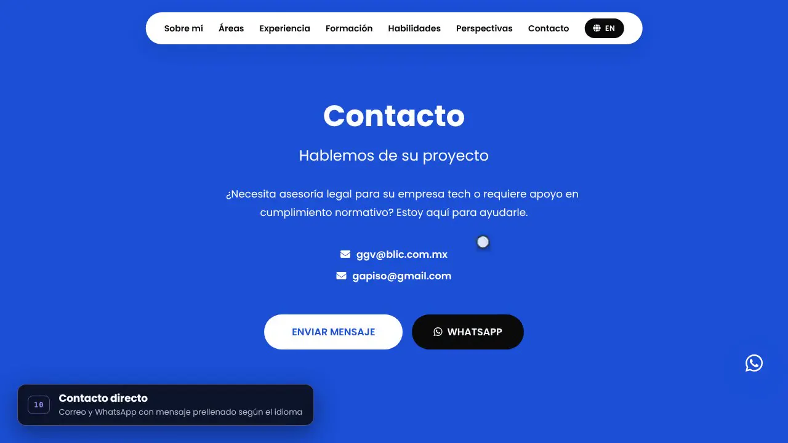

gabrielagonzalezvazquez.github.io








Sitio profesional · Abogada corporativa
Gabriela L. González Vázquez
Sitio para una abogada corporativa y de compliance: presenta su trayectoria, servicios y artículos en español e inglés, con una línea visual sobria en negro, blanco y azul.
- Portada con video de fondoFrase rotativa con sus áreas de práctica y llamadas a la acción.
- Contadores animadosAños de experiencia, países y proyectos que cuentan al hacer scroll.
- Áreas de prácticaVideo de borde a borde y seis servicios especializados con íconos.
- Trayectoria en línea de tiempoExperiencia con logos de cada institución y efecto parallax.
- Habilidades e idiomasCompetencias y nivel de idiomas con barras de progreso.
- Sitio bilingüe ES / ENUn clic traduce todo el contenido y recuerda la preferencia.
- Blog con artículos propiosCategorías, filtros, barra de progreso de lectura y compartir.
- Contacto y aviso de privacidadCorreo, WhatsApp con mensaje prellenado y banner de cookies.